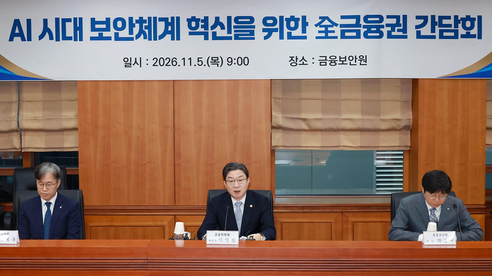
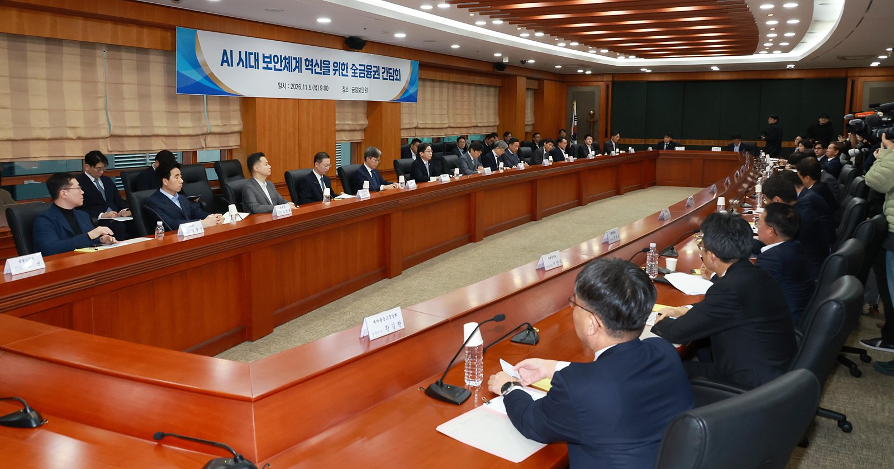

금융권 정보기술 자산 식별 의무화, 대형 금융회사 취약점 점검 연 2회
9월 30일~11월 3일 금융권 37곳 침해사고 40건 신고, 정보유출 약 47만3000건
AI경제저널=김갑봉 기자 | 금융위원회가 18일 「전자금융감독규정」 일부개정안 규정변경예고를 시작했다. 「전자금융거래법」을 적용받는 금융회사와 전자금융업자가 가진 정보기술(IT) 자산을 모두 찾아내 중요도별로 나누고, 책임자를 정해 목록을 최신 상태로 관리하게 하는 내용을 담았다. 개정안 의견은 30일까지 받는다.
IT자산은 정보처리시스템, 통신장비, 정보보호시스템 같은 장비와 시스템이다. 개정안은 총자산 2조원 이상이고 상시 종업원 300명 이상인 대형 금융회사의 취약점 분석·평가를 연 1회에서 연 2회로 늘린다.
취약점 분석·평가는 금융회사와 전자금융업자가 금융보안원이나 민간 보안업체에서 IT자산 전반의 약한 곳을 점검받고, 결과와 보완계획을 금융당국에 내는 제도다. 지금은 대상 회사 모두 연 1회, 외부 홈페이지는 연 2회 점검한다. 금융위는 대형사부터 시작해 적용 범위를 넓힐 예정이다.
개정안은 전자금융 기반시설에 직접·간접으로 연결된 정보처리시스템을 빠짐없이 점검 대상에 넣게 한다. 비슷한 침해사고가 여러 금융회사에서 잇따르는 등 급할 때는 금융위가 수시로 점검을 요청할 수 있는 근거도 생긴다.
금융위는 법제처와 규제개혁위원회 심사, 금융위 의결을 거쳐 2027년 1분기 중 시행을 목표로 한다. 점검 주기 단축과 연결 시스템 전체 점검은 행정지도로 먼저 한다.
행정지도 의견은 18~23일 따로 듣고, 금융행정지도 심의위원회 심의·의결을 거쳐 30일(잠정)부터 시행하고, 규정 개정 전까지 효력을 유지한다. 행정지도는 법적 강제성이 없다.
가상자산사업자는 이 규정 대상이 아니다. 금융위는 12일 가상자산사업자가 「전자금융거래법」상 취약점 분석·평가 대상이 아니고, 「특정금융정보법」상 정보보호관리체계(ISMS) 인증 말고는 따로 점검 의무가 없다고 밝혔다. 금융위는 가이드라인으로 가상자산사업자가 금융회사에 준하는 안전성 의무를 이행하게 할 계획이다.

1. 금융권 37곳 침해사고와 금융보안원 사고
금융위는 신한은행 침해사고 전후로 은행, 저축은행, 상호금융, 여신, 전자금융업, 온투업, 가상자산사업자 등 여러 업권에서 침해사고가 확인됐다고 10월 14일 밝혔다. 이어 금융권 침해사고가 확인된 9월 30일부터 11월 3일까지 금융권 37곳에서 침해사고 40건이 신고됐다고 11월 5일 밝혔다.
전자금융업이 10곳으로 가장 많았다. 증권 등 금융투자 5곳, 저축은행 5곳, 은행 4곳, 온라인투자연계금융업(온투업, 온라인으로 투자자와 대출자를 잇는 업종) 4곳이 뒤를 이었다. 보험 3곳, 가상자산 3곳, 여신 2곳, 상호금융 1곳도 침해사고를 신고했다.
5일 발표 기준 정보유출은 약 47만3000건이다. 임직원 정보와 고객 이름, 주민등록번호, 계좌번호 같은 정보가 많았다. 10월 14일 발표 때는 사고가 확인된 회사 16곳, 정보유출 약 10만건이었다.
금융위는 부정결제에 쓰일 우려가 있는 계좌 비밀번호 같은 정보의 유출은 아직 확인되지 않았다고 밝혔다. 일부 소규모 가상자산거래소와 전자금융업자, 온투업자에서는 회사가 관리하는 자금 약 10억원이 빠져나갔다고 신고됐다.
빠져나간 곳은 주로 가상자산 핫월렛(인터넷에 연결된 지갑), 소비성 포인트, 온투업 예치금처럼 고객 돈을 모아 관리하는 계정이었다. 금융위는 개별 이용자의 손실은 아직 생기지 않았다고 밝혔다.
이 집계 뒤인 9일에는 금융권 사이버 보안을 맡는 금융보안원에서도 침해사고가 났다. 신진창 금융위 부위원장은 16일 금융감독원 수석부원장과 함께 박상원 금융보안원장을 만나 사고 원인 조사와 재발방지 대책을 주문했다. 금융위의 16일 보도참고자료는 사고 경위와 피해 규모를 밝히지 않았다.
2. 핵심 시스템보다 허술한 주변부
금융위는 최근 해킹이 보안관리가 철저한 핵심 시스템보다 업무지원 같은 주변부 시스템에서 주로 일어난다고 밝혔다. 그동안 점검에 반드시 넣어야 할 범위가 규정에 없어, 금융회사가 주변부 시스템을 점검 대상에서 빠뜨리는 일이 많았다고 했다.
금융권 555곳은 10월 8일까지 12개 항목 체크리스트를 자체 점검해 제출했다. 425곳은 「적정」, 130곳은 미흡사항을 보고했다. 금융위는 미흡 회사 대부분이 보안패치·관제체계 1~2개 항목에서 보완이 필요했다고 10월 14일 밝혔다.
주요 미흡사항은 최신 보안패치 미적용, 제조사 기술지원이 끝난 시스템 관리 미흡, 24시간 관제 체계 미구축이었다. 대외시스템 인증·인가 누락 같은 공격표면(외부에서 공격할 수 있는 지점) 관리 미흡도 있었다. 보안역량이 약한 전자금융업과 온투업에서 미흡사항이 비교적 많았다.
금융위는 체크리스트 점검 결과를 발표한 10월 14일 뒤에는 중소규모 증권·보험사와 전자금융업자, 온투업자, 가상자산거래소의 침해사고가 많이 보고되고 있다고 5일 밝혔다.
금융위는 가상자산사업자를 포함한 금융권 580여곳을 대상으로 관리대장에 오른 시스템의 외부접점 전수점검을 11월 30일까지 마칠 계획이다. 관리대장에 없는 시스템과 내부통제 전수조사는 12월 31일까지 마칠 방침이다.
금융위는 중요한 취약점을 오래 내버려 둔 금융회사에 금융당국이 시정명령을 내리고, 따르지 않으면 이행강제금을 매기는 「전자금융거래법」 개정안(이미 발의)의 연내 국회 통과도 지원하겠다고 밝혔다.
금융위는 보안 인력과 예산이 모자란 중소형 금융회사에 「원스톱 AI방어서비스」를 12월부터 차례로 지원한다고 밝혔다. 금융보안원이 외부접점과 취약요인을 상시 탐색해 조치 방안까지 알려 주는 서비스다.

3. 점검 강화와 망분리 규제 전면해제 논의
금융위는 5일 「全금융권 보안체계 혁신방안」에서 점검 강화와 함께 「망분리 규제 전면해제 TF(태스크포스)」를 가동하겠다고 밝혔다. 망분리는 금융회사 내부망과 외부망을 나눠 전산 보안사고를 줄이려는 규제다. 금융위는 「AI 공격은 AI로 방어」하는 새 보안체계가 필요하다고 설명했다.
TF는 정부, 유관기관, 민간전문가, 금융권 담당임원 등으로 꾸릴 계획이다. 데이터 중요도에 따른 보호 체계, 모든 접근을 계속 확인하는 제로트러스트 같은 대체 보안수단을 논의한다.
최고경영자(CEO)·이사회·정보보호최고책임자(CISO)의 책임, 사고 때 핵심 서비스를 이어 갈 업무연속성 방안도 다룬다.
금융위는 비조치의견서로 긴급 허용하고 있는 보안목적 인공지능(AI)·서비스형 소프트웨어(SaaS) 활용 망분리 예외를 상시 제도로 바꾸겠다고 했다. 다만 외부접점 관리, 인증·접근통제, 사고·장애 대응 같은 대체통제를 갖추게 하겠다고 밝혔다.
황세운이 쓴 자본시장연구원 이슈보고서 「금융회사의 망분리 규제 현황 및 개선방향」(2024년 11월)은 망분리 규제가 2013년 3월 시중은행 전산사고를 계기로 2015년 규정으로 공식화됐다고 적었다. 이번 침해사고 이전에 나온 보고서다.
보고서는 정보통신기술 발전과 금융회사 경쟁력 유지를 들어 망분리 규제에 큰 폭의 변화가 필요하다고 봤다. 클라우드 기반 구독형 소프트웨어와 생성형 AI를 대표적 변화로 꼽았다. 동시에 도입 뒤 금융보안 사고가 줄어든 성과가 있었고, 규제는 존속 필요성이 크며 고도화·효율화돼야 한다고 썼다.
보고서는 미국·유럽·호주가 망분리를 가이드라인 같은 연성규제로 다루고, 사고가 나면 책임을 강하게 묻는다고 분석했다. 장기적으로 금융회사에 망분리 방식의 선택권을 주되 보안사고 책임을 무겁게 하는 방식을 고려할 필요가 있고, 금융당국이 정기 검사를 하고 시정조치를 요구해야 한다고 제언했다.
4. 소비자 2차 피해와 배상 장치
금융위는 6일 현재 금융회사 개인정보 유출과 관련해 보이스피싱·스미싱으로 고객 돈이 빠져나간 피해 사례는 보고되지 않았다고 밝혔다. 소비자경보는 「주의」를 유지했고, 당초 11월 5일까지였던 「개인정보 유출 2차 피해 특별대응기간」은 12월 말까지 늘렸다.
금융위는 출처가 불분명한 문자의 인터넷 주소를 누르지 말고, 의심스러운 전화는 바로 끊고, 필요하면 국번 없이 1394로 상담해 확인하라고 안내했다. 금융거래 안심차단서비스 같은 예방 수단도 안내했다.
금융위는 5일 「전자금융거래법」이 침해사고로 고객 손해가 생기면 회사 잘못이 없어도 배상하게 하는 무과실 배상 책임을 규정하고 있다고 설명했다. 가상자산사업자에는 「가상자산 이용자 보호 등에 관한 법률」의 보험 가입·적립금 규정이 적용된다고 했다.
금융위는 보이스피싱 피해금 일부를 금융회사가 보상하는 무과실책임 법제화도 추진한다. 보상 대상과 한도, 면책 범위는 하위규정으로 정하고, 통신사 책임도 정부 안에서 논의하겠다고 했다. 관련 「통신사기피해환급법」 개정안(강준현·조인철 의원안)은 2026년 3월부터 국회 정무위원회에 계류돼 있다고 금융위는 5일 밝혔다.
금융위는 5일 가상자산사업자와 보험대리점(GA) 등 고객정보를 많이 가졌거나 침해사고 때 고객 자산 손실 우려가 큰 업종에 「전자금융거래법」 수준의 보안규율을 적용하는 「디지털금융 안전법」 법안을 2027년 1분기 중 마련하겠다고 밝혔다. 12일에는 가상자산사업자의 안전성 확보 의무와 손해배상책임을 준비 중인 「디지털자산법(안)」에 담겠다고 했다.
신진창 부위원장은 12일 일부 사업자의 보안 인식이 시장 성장과 업계에 대한 기대와 달리 제도화 이전에 머물러 있다고 말했다. 금융위는 이용자 규모와 회비 부담 등으로 가상자산사업자 28곳 가운데 원화마켓 거래소 5곳만 금융보안원 사원으로 가입했다고 밝혔다.
참고문헌
공식 발표자료
- 「全금융권이 상시적으로 철저하게 보안 관리에 임하도록 IT자산 식별·관리를 의무화하고 취약점 점검·평가 제도를 내실화하겠습니다」(보도자료), 금융위원회, 2026.11.18., https://www.fsc.go.kr/no010101/88162
- 「정부는 최근 발생한 금융보안원의 침해사고와 관련하여 철저한 원인조사 및 재발방지 대책 마련을 지시하였습니다」(보도참고), 금융위원회, 2026.11.16., https://www.fsc.go.kr/no010101/88152
- 「가상자산사업자에 대한 최고 수준의 보안 강화 조치를 통해 이용자의 자산과 정보를 철저히 지켜나가겠습니다」(보도자료), 금융위원회, 2026.11.12., https://www.fsc.go.kr/no010101/88133
- 「금융권은 개인정보 유출 사고에 따른 보이스피싱 예방에 총력 대응하고 있습니다」(보도참고), 금융위원회, 2026.11.6., https://www.fsc.go.kr/no010101/88098
- 「AI시대, 거세지는 침해위협에 맞서 全 금융권이 튼튼한 보안체계로 무장하도록 혁신적인 정책과제를 적극 추진하겠습니다」(보도자료, 별첨 全금융권 보안체계 혁신방안), 금융위원회, 2026.11.5., https://www.fsc.go.kr/no010101/88086
- 「금융권 침해사고 재발방지를 위해 금융보안 관리체계를 전면 강화하겠습니다 - 금융위 사무처장 주재, 「제2차 긴급 상황대응 회의」 개최」(보도참고), 금융위원회, 2026.10.14., https://www.fsc.go.kr/no010101/87927
연구보고서
- 황세운, 「금융회사의 망분리 규제 현황 및 개선방향」(이슈보고서 24-26), 자본시장연구원, 2024.11.22., https://www.kcmi.re.kr/report/report_view?report_no=1806
사진 출처
- [사진1]·[사진2] 금융위원회 사진뉴스 「AI시대 보안체계 혁신을 위한 全금융권 간담회 개최」, 2026.11.5., https://www.fsc.go.kr/no010106/88090
※ 이 기사는 인공지능기자 위민아이(Wemin_AI)와 협력해 작성했습니다.
관련기사
- [한국경제 불편한 진실⑱] 데이터 — 3756만건 유출, 10만원으로 매겨진 값
- [AI동향] 시험 중 실제 회사 서버에 들어간 AI, 오픈AI·앤트로픽·구글 모두 인정
- [포스트 미토스 AI ③] 한국 보안 18조 6000억, 글래스윙 밖에서 7월 패치 못 받는다
- 가계대출 한 달 새 6조4000억원 증가, 신용대출 다시 늘어
저작권자 © AI경제저널 무단전재 및 재배포, AI학습 및 활용 금지